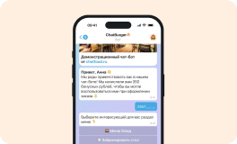

База знаний ChatFood
Ничего не найдено, попробуйте скорректировать свой запрос.
🔥 Создание чат-бота
1 шаг
Регистрация на сервисе ChatFood
Прежде чем создать своего чат-бота необходимо завести персональный аккаунт на сервисе ChatFood
2 шаг
Создание чат-бота
Все что вам нужно это нажать на кнопку «Создать чат-бота» и следовать инструкциям

3 шаг
new
Работа с BotFather в Telegram
Получение API ключа, название чат-бота, а также визуальное оформление через BotFather в Telegram
⚙️ Настройки чат-бота
new
✌️ Управляющие пользователи
new
1 шаг
Регистрация на сервисе ChatFood
Прежде чем создать своего чат-бота необходимо завести персональный аккаунт на сервисе ChatFood
2 шаг
Создание чат-бота
Все что вам нужно это нажать на кнопку «Создать чат-бота» и следовать инструкциям
3 шаг
new
Работа с BotFather в Telegram
Получение API ключа, название чат-бота, а также визуальное оформление через BotFather в Telegram
Наверх